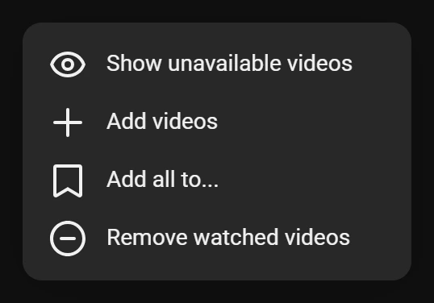
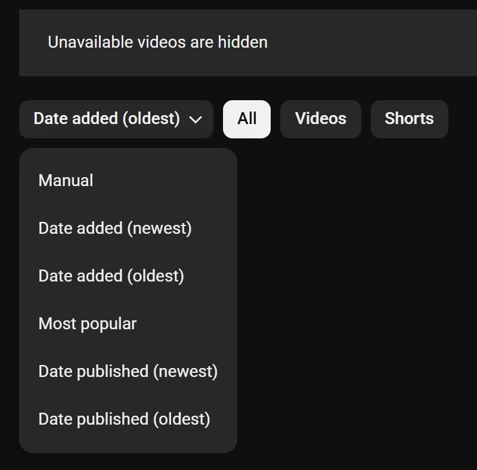
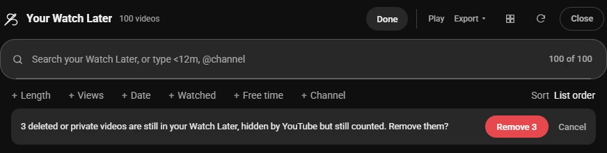

Guide 12·Watch Later
What to do when your YouTube Watch Later is full.
Updated 19 November 2026
Short answer
Watch Later holds 5,000 videos, the same as any YouTube playlist. Once it's full, nothing more saves until you take some out, and deleted or private videos it hides from you still take up room. YouTube's quickest fix is Remove watched videos in the list's ⋮ menu. To find the hidden ones and choose exactly what goes, use Needle's Select on the same page.
01·Limits
Watch Later stops at 5,000
Watch Later is a playlist, and a YouTube playlist holds up to 5,000 videos. YouTube's help pages don't print the number, but it's the one everybody who hits it reports, and nothing raises it.
When it's full, saving another video stops working. The message people get is Maximum playlist size exceeded, and sometimes the save just doesn't take. The fix is always the same: take some out.
The count under the title of your Watch Later says how close you are. It isn't quite the number of videos you can see, though.
02·Hidden videos
The videos you can't see still count
When a video in Watch Later is deleted or made private, YouTube hides it from the list but leaves it in, still counted toward the 5,000. A note above the list says Unavailable videos are hidden. On the account checked for this guide, the count said 108 videos, 105 showed after scrolling to the end, and the other 3 were deleted or private ones.

To get them back on screen, open the list's ⋮ menu, beside the download button, and choose Show unavailable videos. Each one then has its own ⋮ with Remove from Watch later. On a long list they're scattered all the way through it.
03·On YouTube
Make room on YouTube
- Remove watched videos. In the same ⋮ menu. It takes out everything YouTube counts as watched, all at once, with no preview and no undo. Watch Later rarely fills up with videos you finished, though, so it may not free much, and people with full lists have reported it failing with an error. What it removes.
- Oldest first, one at a time. Sort the list by Date added (oldest) and work down from the top, each video's ⋮ then Remove from Watch later. The oldest saves are usually the ones you'll never get to.
- The hidden ones. Show unavailable videos, as above, and remove each.
There's no button to empty Watch Later, and a few hundred by hand is a long afternoon. The YouTube app has Remove watched videos in the ⋮ at the top of Watch Later too.
04·Sorting
Sort Watch Later
On a computer, the first chip above the list is the sort menu. Checked on 18 November 2026:

- Date added is when you saved it. Oldest first brings the forgotten ones to the top.
- Date published is when the video went up.
- Manual is your own order, by dragging.
Whatever you pick is saved with the list, so it opens in that order next time. What's missing is length, the one most people want for Watch Later: what fits in the time you have. Needle's panel sorts by length, and by views or upload date, without changing the list. Sorting by length.
05·With Needle
Make room with Needle
Needle is a free Chrome extension that reads your whole Watch Later, finds the hidden videos, and removes what you pick, with an undo.
- For a full list, first raise the Video limit in Needle's settings (All settings, in the popup) to 5,000. It reads up to 1,800 by default.
- Open your Watch Later and press the needle button in the bottom right corner, or Alt+Y. If the panel says First 100 only, press Read all beside it.
- Press Select, then Find deleted videos. Needle counts the hidden ones and asks before removing them.
- Then pick what else goes: type a filter and press Pick all shown, or Pick the finished, or click videos one by one.
- Press Remove from Watch Later and confirm the number. Undo puts them all back.

unwatched before:2023 | Saved, never started, and uploaded before 2023 |
is:watched | Everything you've finished |
>2h | Everything over two hours |
@name | Everything from one channel |
Type one in the panel's box, look at what's left, then Pick all shown. To empty the list completely, pick all with no filter at all.
Needle doesn't press YouTube's Remove watched videos. It removes each video you picked the way that video's own Remove from Watch later does, 25 at a time, and if YouTube refuses a batch it stops and says how many went. Changes are off until you allow them, the first time you press Remove.
06·Before you clear
Before a big clear-out
Undo covers the batch you just removed, and Removed earlier, in Select, keeps everything Needle took out of the list for six months, to put back. To keep a record for good, export first: Export in the panel, then Download CSV, with every title, channel, link and length. What the file contains.
Searching it rather than clearing it? How to search your Watch Later.
07·Questions
Questions?
How many videos can you add to Watch Later?
5,000. Watch Later is a playlist, and every YouTube playlist stops at 5,000. There's no setting that raises it.
What does "maximum playlist size exceeded" mean?
That Watch Later, or the playlist you were saving to, already has 5,000 videos in it. Take some out and saving works again.
Why is it full when I can't see 5,000 videos?
Deleted and private videos stay in the list, hidden, and the count at the top includes them. Show unavailable videos in the list's ⋮ menu puts them back on screen, and Needle's Find deleted videos lists them all at once.
Can I clear all of Watch Later at once?
Not with one button on YouTube. Remove watched videos only takes what you've watched. With Needle, read the whole list, press Select, then Pick all shown and Remove: every video, with an Undo straight after.
Can you sort Watch Later?
Yes, on a computer. The menu above the list has Manual, Date added (newest or oldest), Most popular and Date published (newest or oldest). There's no sort by length. Needle's panel sorts by length, views or upload date without changing the list.
Does sorting change my Watch Later?
YouTube's does. The order you pick is saved with the list and it opens that way next time. Needle's sort only changes what its panel shows.
Is there a way around the 5,000 limit?
Only by spreading out: save the overflow to a playlist of your own, which holds another 5,000, or keep a spreadsheet of what you clear with Needle's Export.
Can I get removed videos back?
From Remove watched videos, only one at a time, by saving each again. Needle's Undo puts back a whole batch, and Removed earlier keeps what it took out for six months.
Is it free?
Yes. No account, no trial, no paid tier.